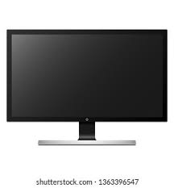
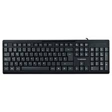
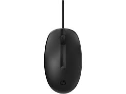
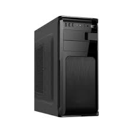

|
Componentes externos de una computadora

Monitor (o Pantalla).
La pantalla es la parte de la computadora que va a mostrar el contenido. Gracias a ella, el usuario puede interactuar con la computadora. Cuando escribimos con el teclado y usamos el ratón, se refleja en la pantalla y se muestran los datos.

Teclado.
Sirve para escribir texto y así comunicarse con la computadora. Los teclados generalmente tienen alrededor de cien teclas: letras del alfabeto, números, acentos y teclas especiales. Es el descendiente de la máquina de escribir. Hay varios tipos de teclado: cableado o inalámbrico, con o sin teclado numérico, con funciones adicionales.

En la actualidad, los ratones están equipados con un sensor de desplazamiento, normalmente óptico o láser. ¡Pero puede que te acuerdes de los ratones de bola! Los ratones pueden ser con cable o inalámbricos (en este caso, hay que conectar un receptor inalámbrico a un puerto USB en la computadora).
En las computadoras portátiles, el ratón no es obligatorio, ya que cuentan con un touchpad situado al lado del teclado que cumple esta función.
El ratón tiene dos botones para hacer clic, doble clic o clic derecho y una rueda de desplazamiento para descender por la página web o el procesador de texto.
El Ratón (o Mouse).
Con él puedes mover el cursor (la flecha) en la pantalla, apuntar hacia elementos y seleccionarlos haciendo click.En la actualidad, los ratones están equipados con un sensor de desplazamiento, normalmente óptico o láser. ¡Pero puede que te acuerdes de los ratones de bola! Los ratones pueden ser con cable o inalámbricos (en este caso, hay que conectar un receptor inalámbrico a un puerto USB en la computadora).
En las computadoras portátiles, el ratón no es obligatorio, ya que cuentan con un touchpad situado al lado del teclado que cumple esta función.
El ratón tiene dos botones para hacer clic, doble clic o clic derecho y una rueda de desplazamiento para descender por la página web o el procesador de texto.

Hoy en día, algunas computadoras ya no tienen una unidad central propiamente dicha, sino que todo está situado detrás de la pantalla, como es el caso del iMac, o bajo el teclado como en todos las laptop.
Case (o Caja).
Es la caja que contiene todo el material electrónico esencial para el funcionamiento de la PC. El teclado, el ratón y la pantalla están conectados a ella. Es por ejemplo en la unidad central donde se inserta un disco/CD-Rom.Hoy en día, algunas computadoras ya no tienen una unidad central propiamente dicha, sino que todo está situado detrás de la pantalla, como es el caso del iMac, o bajo el teclado como en todos las laptop.
| Copyright ©2023 Abraham Amaro, Elías López, Gabriel Donadelli, Ruby Pérez |